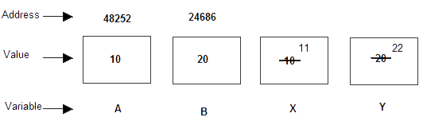
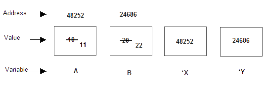

Pointers are variables that store the memory address of another variable .They allow direct access and manipulation of memory, enabling dynamic memory allocation, efficient array handling, and function argument passing by reference. Pointers are declared using the * operator, and they are powerful tools for advanced programming tasks.
Definition of Pointers?
How to declare and initialize a pointer?
int* ptr;
int a = 10;
ptr = &a;
-
ptr is pointer.
-
'*' is a dereference operator.
-
'&' is a reference operator.
- Now address of variable a is stored in Pointer Ptr.
Types of pointers.
-
NULL POINTER
- VOID POINTER
- WILD POINTER
A NULL pointer can be assign a value NULL at the time of declaration.
int *ptr = NULL;
It assigns value zero.
In C programming, a void pointer is also called as a generic pointer. It does not have any standard
data type. A void pointer is created by using the keyword void. It can be used to store an address
of any variable.
void *ptr = NULL ;
A pointer is said to be a wild pointer if it is not being initialized to anything. These types of
pointers are not efficient because they may point to some unknown memory location which may cause
problems in our program and it may lead to crashing of the program. One should always be careful
while working with wild pointer
int *ptr ;
Advantages of pointers
- Reduces the execution time of the program.
- Pointers allows us to return more than one value from the functions.
- Pointers provide a way to perform dynamic memory allocation and deallocation.
- Pointers provide direct access to memory.
Disadvantages of pointers
- Uninitialized pointers might cause segmentation fault.
- Dynamically allocated block needs to be freed explicitly
- If pointers are updated with incorrect values, it might lead to memory corruption.
- Pointers provide direct access to memory.
Double Pointer(pointer to pointer)
A double pointer, or a pointer to a pointer, is a variable that holds the address of another pointer. Essentially, it points to a memory location that contains another pointer, which in turn points to the actual data. It's often used in complex data structures and dynamic memory allocation.

Here variable arr will give the base address, which is a constant pointer pointing to the first element of the array, arr[0]. Hence arr contains the address of arr[0] i.e 1000. In short, arr has two purpose - it is the name of the array and it acts as a pointer pointing towards the first element in the array.
Pointers and Function
In C programming, it is also possible to pass addresses as arguments to functions.
To accept these addresses in the function definition, we can use pointers. It's because pointers are used to
store addresses.
Like normal variable, pointer variable can be passed as function argument and function can return pointer as
well.
There are two approaches to passing argument to a function:
-
Call by Value
-
Call by Reference
Call by value is a method of passing arguments to a function where a copy of the actual value is passed. Changes made to the parameter inside the function do not affect the original value.

Call by reference is a method of passing arguments to a function where the function receives a reference (address) to the actual variable, not just a copy. This means that any changes made to the parameter inside the function will directly affect the original variable.

Storage Classes
In programming, storage classes define the scope (visibility) and lifetime of variables and functions. Here are the four main storage classes in simple terms:
- Automatic (auto):
- Static
- External
- Register
Scope:
Local to the function/block where it's defined.
Lifetime: Exists until the function/block execution ends.
Example: Local variables inside a function.
Scope: Local to the function/block, but retains its value between function calls.
Lifetime: Exists for the entire duration of the program.
Example: Static variables inside a function.
Scope: Global, available to all functions in all files (if declared properly).
Lifetime: Exists for the entire duration of the program.
Example: Global variables/functions declared with extern.
Scope: Local to the function/block where it's defined.
Lifetime: Exists until the function/block execution ends.
Special Note: Suggests storing the variable in a CPU register for fast access.
Example: Frequently accessed local variables.
# Auto v/s Static v/s External v/s Register
| Storage Class | Declaration | Storage | Default Initial Value | Scope | Lifetime |
|---|---|---|---|---|---|
| Auto | Inside a function or a Block | Memory | unpredictable | Within the function/block | within the block or function |
| Static | Inside a function or a Block | Memory | zero | Within the function/block | Program Runtime |
| External | Outside a function or a block | Memory | zero | Entire the file and other files where the variable is declared as extern | Program Runtime |
| Register | Inside a function or a Block | CPU Registers | Garbage | Within the function/block | within the block or function |